July 3, 2015
| NW Montana had some record hot temperatures in
late June and early July 2015. I was determined not to stay indoors
hiding from the heat, so I went to Kootenai Falls near Libby, MT on my day
off that I got for the 4th of July. Eric was back in Oklahoma in
pretty much the same temperatures, except that you expect that in Oklahoma
in July! |
|
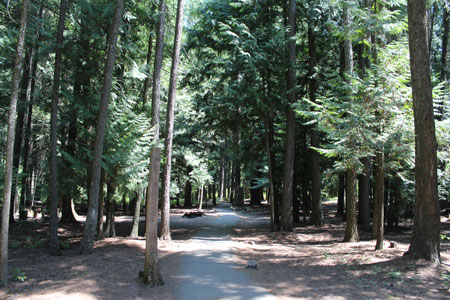 The pretty walk you take from the parking area to the falls |
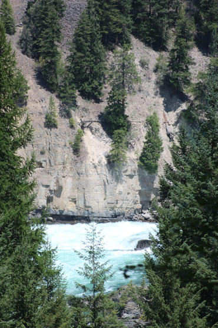 |
| My first glimpse of the falls | |
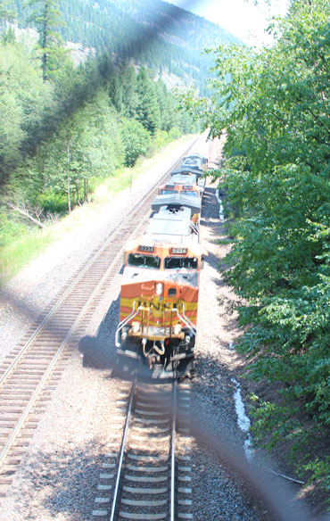 |
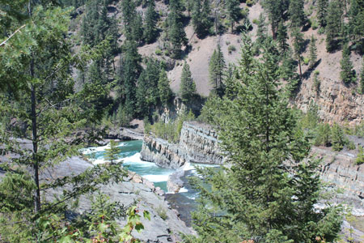 When you were this close to the falls, the river acted as a natural air conditioner. |
| It was fun to see a train come through as I crossed the railroad bridge. There were kids on the bridge so they honked at us. |
|
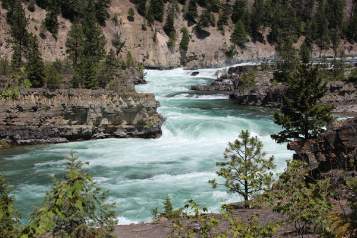 |
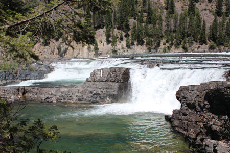 |
| These falls aren't dramatic drops so much as a long series of short drops that make for beautiful scenery | |
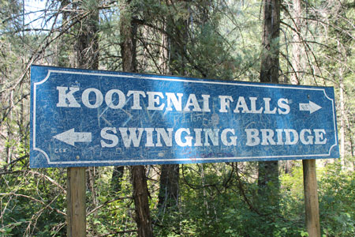 |
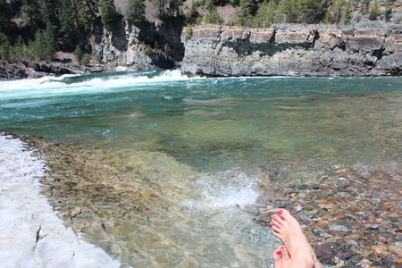 |
| Heading over to the swinging suspension bridge | First, a stop to cool off. That water comes out of the bottom of Libby Dam so it was COLD! |
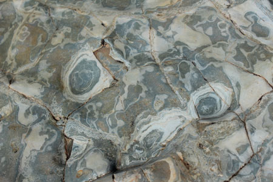 |
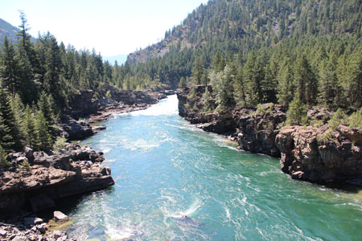 |
| Cool patterns in the large rock I was sitting on. | Downriver from the falls a little bit |
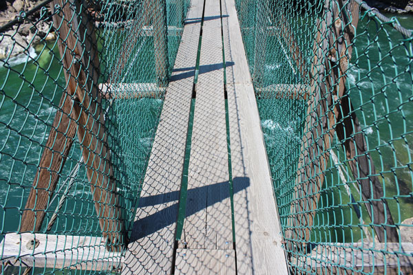 |
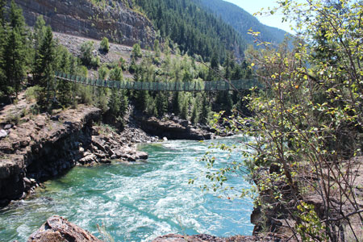 |
| The suspension bridge had a lot of gaps and made a lot of creaks, but I still had to stop to take pics | Looking back at the bridge from the other side. |